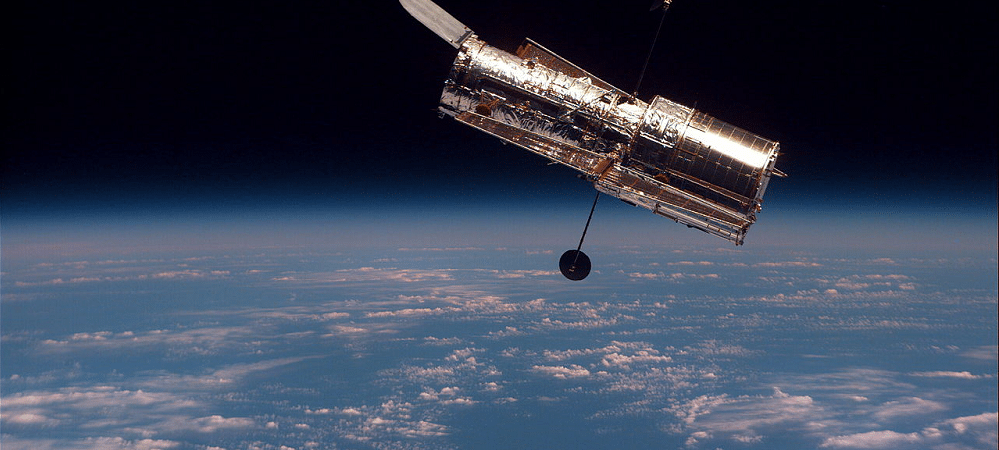

O TELESCÓPIO HUBBLE
É difícil imaginar como séria o campo da astronomia sem esse incrível instrumento de pesquisa, o telescópio espacial Hubble foi o ponta pé inicial para o estudo do universo com muito mais detalhes, mas afinal, como surgiu esse incrível telescópio?
O nome Hubble veio em homenagem ao astrônomo Edwin Powell Hubble, que revolucionou a Astronomia ao identificar que a velocidade de afastamento das galáxias é proporcional á sua distância, ela foi imaginada inicialmente nos anos de 1940 porém podemos ter relatos sobre um telescópio que poderia ser lançado no espaço por um foguete em 1923 em uma obra de Hermann Oberth, com a chegada da segunda guerra mundial, vários cientistas utilizaram o rápido avanço tecnológico para o melhoramento de foguetes e em 1946 o astrônomo Lyman Splitzer lançou um artigo onde se discutia quais seriam as principais vantagens e desvantagens que um observatório no espaço teria mais do que os telescópios terrestres onde ele listava duas principais vantagens, a resolução óptica, que é a distância mínima da separação entre objetos na qual eles permaneçam claramente distintos, e a segunda era a possibilidade de observar a luz infravermelha e ultravioleta que são fortemente absorvidas pela atmosfera.
Anos depois, em 1966 foi lançado o primeiro Observatório Astronômico Orbital (OAO) que apresentou falhas nas baterias após três dias, logo após terminarem a missão do OAO o seu sucessor, OAO-2, foi lançado que permitiu fazer observações em ultravioleta das estrelas e galáxias.

O grande sucesso do OAO encorajou fortemente o consenso entre a comunidade astronômica de que um outro telescópio ainda mais potente fosse lançado. A partir daí foram formados dois comitês, um para planejar os aspectos de engenharia do projeto e outra para estabelecer metas científicas para a missão. Após a formação dos comitês, o próximo desafio da NASA era conseguir financiamento para a construção desse instrumento que seria, de longe, muito mais caro que qualquer outro telescópio terrestre. Com dificuldades para conseguir financiamento suficiente por parte do congresso dos EUA, astrônomos de todo o mundo se encontraram pessoalmente com congressistas e senadores além de campanhas de abaixo assinado e um relatório da Academia Nacional de Ciências que enfatizava a necessidade de um telescópio, eventualmente o senado concordou com um orçamento para o projeto, porém, ele era menor do que a NASA esperava.
Com a dificuldade de conseguir novos financiamentos, o projeto original teve que ser reduzido de 3 metros para 2,4 metros para que além cortar gastos também permitisse uma configuração mais compacta do hardware do telescópio. A preocupação com o orçamento do projeto fez surgir uma colaboração com a Agência Espacial Europeia (ESA) que concordou em fornecer alguns instrumentos para o telescópio bem como células solares que iriam fornecer energia ao projeto além de financiar 15% dos custos em troca da garantia de 15% do tempo de observação para astrônomos europeus.
CONSTRUÇÃO, MONTAGEM E LANÇAMENTO
Assim que foi liberada, a fase de construção do projeto foi dividida entre diversas instituições. Marshall Space Flight Center ficou responsável pelo controle geral de instrumentos científicos e controle terrestre durante a missão. O centro Marshall incluiu a PerkinElmer, uma companhia do ramo da óptica, para fornecer o mecanismo de montagem do telescópio e os sensores de navegação e por fim, a Lockheed ficou responsável pela construção da nave espacial em que o telescópio ficaria alojado.

>A nave
A nave espacial na qual seriam alojados o telescópio e os instrumentos representava um grande desafio para a engenharia. Teria que suportar adequadamente mudanças frequentes entre a luz direta do Sol e a escuridão da sombra da Terra — que provocam mudanças bruscas na temperatura — enquanto devia permanecer estável o suficiente para permitir o direcionamento preciso do telescópio. Um manto de isolamento de várias camadas mantém a temperatura estável dentro do telescópio, e envolve um casco leve de alumínio dentro do qual o telescópio e os instrumentos são instalados. Dentro deste escudo, uma armação de grafite-epóxi mantém as peças firmemente alinhadas. Uma vez que os compostos de grafite são higroscópicos, havia um risco de que o vapor de água absorvido pela armação durante sua montagem viesse a ser liberado no vácuo do espaço; se isso ocorresse, os instrumentos ficariam cobertos de cristais de gelo. Para reduzir esse risco, foi realizada uma limpeza com gás nitrogênio antes do lançamento.
Enquanto a construção da nave espacial andava bem, a Lockheed ainda experimentava dificuldades com o orçamento e o cronograma, e, no verão de 1985, a construção da nave havia ultrapassado em 30% o orçamento e estava com três meses de atraso. Um relatório disse que a Lockheed tendia a seguir as indicações da NASA, em vez de tomar a iniciativa na construção.

sistema óptico
Opticamente o Hubble é um refletor tipo Cassegrain com um projeto Ritchey-Chrétien. Este projeto, com dois grandes espelhos hiperbólicos, é bom para fotografar um largo campo de vista, mas tem a desvantagem de ser de difícil construção. Os sistemas relacionados com a óptica e os espelhos representavam a parte crucial, e seriam concebidos segundo especificações muito rígidas. Em média, os telescópios usam espelhos polidos para uma precisão de cerca de um décimo do comprimento de onda da luz visível; porém, uma vez que o Hubble seria utilizado para observações na gama do ultravioleta ao infravermelho com uma resolução dez vezes superior aos telescópios antecessores, o espelho teria que ser polido para uma precisão de 10 nanómetros, cerca de 1/65 do comprimento de onda da luz vermelha.
A Perkin-Elmer planejava utilizar maquinaria assistida por computador extremamente sofisticada para modelar o espelho segundo as especificações impostas, mas para o caso da sua tecnologia apresentar dificuldades, a Kodak também foi contratada para construir um espelho de reserva, utilizando as técnicas de polimento tradicionais. A construção do espelho foi iniciada em 1979, utilizando vidro de expansão ultra-reduzida. Para reduzir ao máximo o peso do espelho, este foi acondicionado numa espécie de sanduíche de duas placas de cerca de uma polegada de altura e uma estrutura em forma de colmeia no meio. O polimento prolongou-se de 1979 até maio de 1981. Mais tarde, relatórios da NASA questionaram a estrutura intermédia proposta pela PerkinElmer, o que acarretou complicações de agenda e de orçamento. O espelho foi concluído nos finais de 1981, com o acréscimo de um revestimento reflectivo em alumínio, de espessura de 75 nm, e outro revestimento protetor de fluoreto de magnésio, de 25 nm de espessura, o que permitia aumentar a reflexão da luz ultravioleta.
lançamento
Subsistiam, porém, dúvidas sobre a competência da Perkin-Elmer num projecto desta importância, já que o orçamento e agenda para concluir o OTA continuavam a aumentar. Em resposta a esta agenda, descrita como "não delineada e diariamente alterada", a NASA adiou o lançamento do telescópio para abril de 1985. A agenda da Perkin-Elmer continuou a inflar, a uma taxa de cerca de um mês a cada três meses, tendo-se mesmo verificado, esporadicamente, atrasos de um dia por cada dia de trabalho. Face a isto, a NASA foi forçada a reagendar o lançamento para 1 de março de 1986. Por esta altura, o custo total do projeto tinha atingido 1,175 bilhões de dólares. Além disso, o software necessário para controlar o Hubble em terra não ficou pronto em 1986, e de fato permaneceria inacabado até 1990. Para completar o quadro de dificuldades, no mesmo ano aconteceu o acidente com a nave Challenger, o que provocou um esfriamento no programa espacial. Eventualmente, após a retomada dos voos dos ônibus espaciais em 1988, o lançamento do telescópio foi reagendado para 1990. Por fim, em 24 de abril de 1990, a missão STS-31 do Discovery fez o lançamento do telescópio com sucesso em sua órbita prevista.
Desde a estimativa de custo inicial de cerca de 400 milhões, o telescópio chegou a custar mais de 2,5 bilhões de dólares para construir. Custos cumulativos do Hubble até hoje são estimados entre 4,5 e 6 bilhões, com uma contribuição financeira adicional da Europa de 593 milhões de euros, até a estimativa de 1999.

Instrumentos originais
Quando lançado, o Hubble transportava cinco instrumentos científicos: a Wide Field and Planetary Camera (câmera de campo largo e planetário - WF/PC), o Goddard High Resolution Spectrograph (espectrógrafo de alta resolução Goddard - GHRS), o High Speed Photometer (fotômetro de alta velocidade - HSP), a Faint Object Camera (câmera de objetos pálidos - FOC) e o Faint Object Spectrograph (espectrógrafo de objetos pálidos - FOS). A WF/PC era um dispositivo de imagem de alta resolução destinado principalmente para observações ópticas. Foi construído pelo Jet Propulsion Laboratory da NASA, e incorporou um conjunto de 48 filtros de isolamento das linhas espectrais de particular interesse astrofísico. O instrumento continha oito chips CCD divididos entre duas câmeras, cada uma com quatro CCDs. A câmera de campo largo WF contemplou um campo de grande angular em detrimento da resolução, enquanto a câmera planetária PC tomava imagens em um comprimento focal mais eficaz do que os chips WF, dando-lhe uma maior ampliação.
O GHRS foi um espectrógrafo projetado para operar no ultravioleta. Foi construído pelo Goddard Space Flight Center, e podia alcançar uma resolução espectral de 90 000. Também otimizadas para observações ultravioleta eram a FOC e a FOS, que conseguiram a mais alta resolução de todos os instrumentos no Hubble. Ao invés de CCDs, estes três instrumentos utilizaram a contagem digital de fótons como detector. A FOC foi construído pela ESA, enquanto a Universidade da Califórnia em San Diego e a Martin Marietta Corporation construiu o FOS.
O instrumento final era o HSP, projetado e construído na Universidade de Wisconsin-Madison. Foi otimizado para observações em luz visível e ultravioleta de estrelas variáveis e outros objetos astronômicos de brilho variável. Poderia fazer até 100 000 medições por segundo com uma precisão fotométrica de cerca de 2% ou melhor.[29] O sistema de orientação HST também pode ser usado como um instrumento científico. Seus três Fine Guidance Sensors (sensores de orientação fina - FGS) são utilizados principalmente para manter o telescópio apontado com precisão durante a observação, mas também pode ser usado para realizar astrometria extremamente precisa. Já foram obtidas medições de 0,0003 arcsecs.
impacto na astronomia
O Hubble tem ajudado a resolver alguns antigos problemas da astronomia, bem como revelado novos resultados que exigiram novas teorias para explicá-los. Entre suas principais conquistas está a medição das distâncias das cefeidas com precisão inédita e, com isso, limitando o valor da constante de Hubble - a medida da taxa na qual o universo está em expansão, que também está relacionada com a sua idade. Antes do lançamento do Hubble, as estimativas da constante de Hubble tipicamente tinham erros de até 50%; mas as medições do Hubble de cefeidas no aglomerado de Virgem e outros aglomerados de galáxias distantes forneceu um valor medido com uma precisão de ± 10%, o que é consistente com outras medidas mais precisas feitas desde o lançamento do Hubble usando outras técnicas.
Enquanto o Hubble ajudou a refinar as estimativas da idade do universo, ele também colocou em dúvida as teorias sobre o seu futuro. Astrônomos das equipes High-z Supernova Search Team e Supernova Cosmology Project usaram o telescópio para observar supernovas distantes e descobriram evidências de que, longe de desacelerar sob a influência da gravidade, o universo pode de fato estar se expandindo em uma taxa de aceleração. Esta aceleração foi posteriormente medida com mais precisão por outros telescópios terrestres e espaciais, confirmando a constatação do Hubble. A causa desta aceleração permanece mal compreendida, mas atribui-se mais comumente à influência da energia escura.
Os espectros e imagens de alta resolução fornecidos pelo Hubble têm sido particularmente úteis para estabelecer a prevalência de buracos negros no núcleo de galáxias próximas. Embora tivesse sido suposto na década de 1960 que os buracos negros seriam encontrados nos centros de algumas galáxias, coube ao Hubble contribuir para mostrar que os buracos negros são, provavelmente, comuns nos centros galácticos, e que as massas dos buracos negros e as propriedades destas galáxias estão intimamente relacionadas.
A colisão do cometa Shoemaker-Levy 9 com Júpiter em 1994 foi um presente para os astrônomos, acontecendo apenas alguns meses após uma missão de manutenção restaurar o desempenho óptico do Hubble. As imagens que o telescópio conseguiu do planeta foram mais nítidas do que quaisquer outras tomadas desde a passagem da Voyager 2 em 1979, e foram cruciais para o estudo da dinâmica da colisão de um cometa com Júpiter, um evento raro. Outras grandes descobertas feitas usando seus dados incluem discos proto-planetários na nebulosa de Orion; evidências da presença de planetas extra-solares em torno de estrelas como o Sol e as contrapartidas ópticas das ainda misteriosas explosões de raios gama. O Hubble também tem sido usado para estudar os objetos nos confins do Sistema Solar, incluindo planetas anões Plutão e Eris.
Um legado único do Hubble são as imagens produzidas pelas câmeras de espaço profundo e ultraprofundo, de sensibilidade inigualável em comprimentos de onda visíveis, criando imagens das mais distantes regiões do céu já obtidas nestes comprimentos de onda. As imagens revelam galáxias a bilhões de anos-luz de distância, e têm tanto gerado como subsidiado uma grande quantidade de trabalhos científicos, abrindo uma nova janela para o Universo primordial.
Outros fatos mostram o impacto positivo do telescópio na astronomia. Mais de 9 000 trabalhos com base em dados do Hubble foram publicados em jornais peer-reviewed, e inúmeros outros surgiram em anais de eventos. Em média, um trabalho com base em dados do Hubble recebe cerca de duas vezes mais citações do que os com base em dados não-Hubble. Dos 200 artigos científicos publicados a cada ano que recebem mais citações, cerca de 10% são baseadas em dados do Hubble